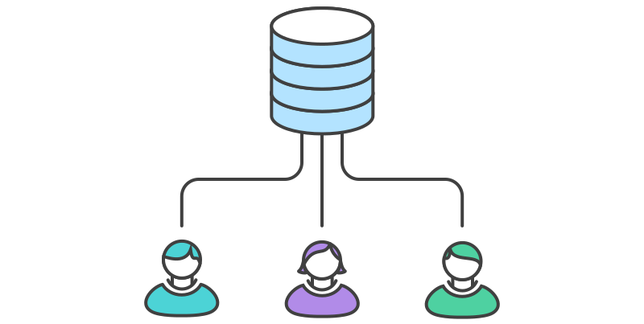
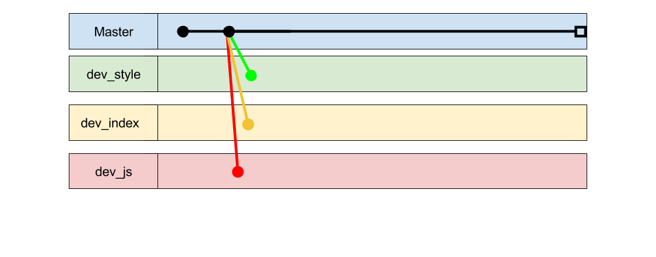

Cara Kerja Git : Workflow
Di bagian sebelumnya kamu sudah dijelaskan tentang bagaimana Git menyimpan semua daftar perubahan final yang sudah kamu edit. Di bagian ini akan dijelaskan bagaimana caranya daftar perubahan final hasil pekerjaan kamu, bisa digabungkan dengan hasil pekerjaan anggota tim kamu.
Di bagian sebelumnya, setelah kita memulai Git di Folder TUGAS_DESWEB , Git akan membuat folder database berjudul '.git'. Folder ini akan berisikan daftar-daftar perubahan final dari hasil pekerjaan kita. Selanjutnya kita akan simpan database ini ke server, supaya anggota tim kita bisa menduplikasi database Git TUGAS_DESWEB ke komputer masing-masing.
 Ceritanya database Git TUGAS_DESWEB udah diupload ke server.
(source picture)
Ceritanya database Git TUGAS_DESWEB udah diupload ke server.
(source picture)
Selanjutnya anggota tim kamu akan menduplikasi database Git TUGAS_DESWEB ke komputer masing-masing.
 Anggota tim menduplikasi database Git TUGAS_DESWEB dari server. (source picture)
Selanjutnya kamu dan anggota tim kamu akan bekerja di masing-masing komputer.
Alur kerja yang dilakukan di masing-masing komputer sama seperti yang dijelaskan di sesi sebelumnya.
Bedanya adalah, setelah selesai menyimpan perubahan final.
Kamu akan mengupload daftar perubahan final terbaru ke database Git TUGAS_DESWEB di server.
 Setor daftar perubahan final ke database Git TUGAS_DESWEB di server. (source picture)
Setor daftar perubahan final ke database Git TUGAS_DESWEB di server. (source picture)
Saat ini data perubahan final di database Git di komputer kamu sama persis
dengan yang ada di server.
Sedangkan data perubahan final di komputer anggota tim kamu yang lain berbeda.
Untuk menyamakan, anggota tim kamu perlu menarik data perubahan final yang baru saja kamu upload, ke komputer masing-masing.
 Anggota tim menarik daftar perubahan final terbaru dari database Git TUGAS_DESWEB di server. (source picture)
Anggota tim menarik daftar perubahan final terbaru dari database Git TUGAS_DESWEB di server. (source picture)
Anggota tim kamu juga dapat mengupload daftar perubahan final hasil pekerjaan masing-masing. Kamu dapat menggabungkan hasil pekerjaan mereka ke kodingan kamu dengan menarik daftar perubahan final terbaru dari database setelah anggota tim kamu selesai mengupload daftar perubahan final mereka ke database Git TUGAS_DESWEB di server.
Ini adalah versi sederhana dari alur kerja (Workflow) yang bisa diterapkan saat menggunakan
Git untuk kerja kelompok. Alur kerja ini cukup untuk memfasilitasi
proyek pengembangan software skala kecil, dengan jumlah anggota tim yang kecil pula.
Semua anggota tim menggunakan satu versi daftar perubahan final yang sama.
Dan progress pekerjaan cenderung bersifat serial.
Ada kalanya kamu harus menunggu pekerjaan anggota tim yang lain selesai agar kamu bisa melanjutkan pekerjaan bagian kamu.
Terus gimana dong? Supaya semua anggota tim bisa bekerja secara paralel, kamu dapat mengikut Workflow yang selama ini kami terapkan di kantor kami. Workflow ini secra teknis mirip dengan workflow yang dijelaskan sebelumnya. Tapi Supaya semua anggota tim bisa bekerja secara paralel kita perlu beberapa aturan atau konvensi yang harus diikuti oleh semua anggota tim.
- Pembagian Tugas
- Misal berdasarkan contoh tugas desain web yang dijelaskan di sesi sebelumnya , bagi tugas ke tiga kelompok. Kelompok HTML, kelompok CSS, dan kelompok JS.
- Avoid Conflict
- Kelompok HTML hanya boleh mengedit file HTML, kelompok CSS hanya boleh mengedit file CSS, dan kelompok JS hanya boleh mengedit file JS.
- Bercabang
- Setiap kelompok punya daftar perubahan final versi masing-masing.
- Diktator
- Tentukan satu diktator yang bertugas untuk menggabungkan daftar perubahan final dari masing-masing versi ke daftar perubahan final versi 'Master'
Misal contoh tugas Desain Web yang kita jelaskan sebelumnya itu adalah tugas kelompok. Maka Sang Diktator akan membuat database Git versi awal dan menguploadnya ke server. Jika pembagian tugas sudah ditetapkan ke masing-masing anggota tim. Setiap kelompok akan membuat daftar perubahan final versi kelompok masing-masing berdasarkan daftar perubahan final versi 'Master' yang baru diupload oleh Sang Diktator.
 Tiga daftar perubahan final baru berdasarkan versi 'Master'
Setelah daftar perubahan final untuk masing-masing kelompok sudah dibuat,
semua anggota tim dapat bekerja secara paralel. Bagian HTML bekerja mengedit file HTML,
bagian CSS mengerjakan desain tampilan, dan bagian JS mengerjakan kode javascript.
Setiap masing-masing kelompok merasa pekerjaannya sudah bisa digabungkan.
Sang Diktator akan turun tangan untuk menggabungkan daftar perubahan final masing-masing kelompok ke daftar perubahan final versi 'Master' di server.
Daftar Istilah
remote repository
Database daftar perubahan file Git, tapi ada di server.
clone
Menduplikasi remote repository (yang ada di server) ke local repository (di komputer kamu).
push
Menyamakan daftar perubahan file versi terakhir dari local repository ke remote repository
pull
Menyamakan daftar perubahan file versi terakhir dari remote repository ke local repository.
And that's how you can work with your team using Git!
Sekarang mari kita implementasikan menggunakan tools dan kode beneran!